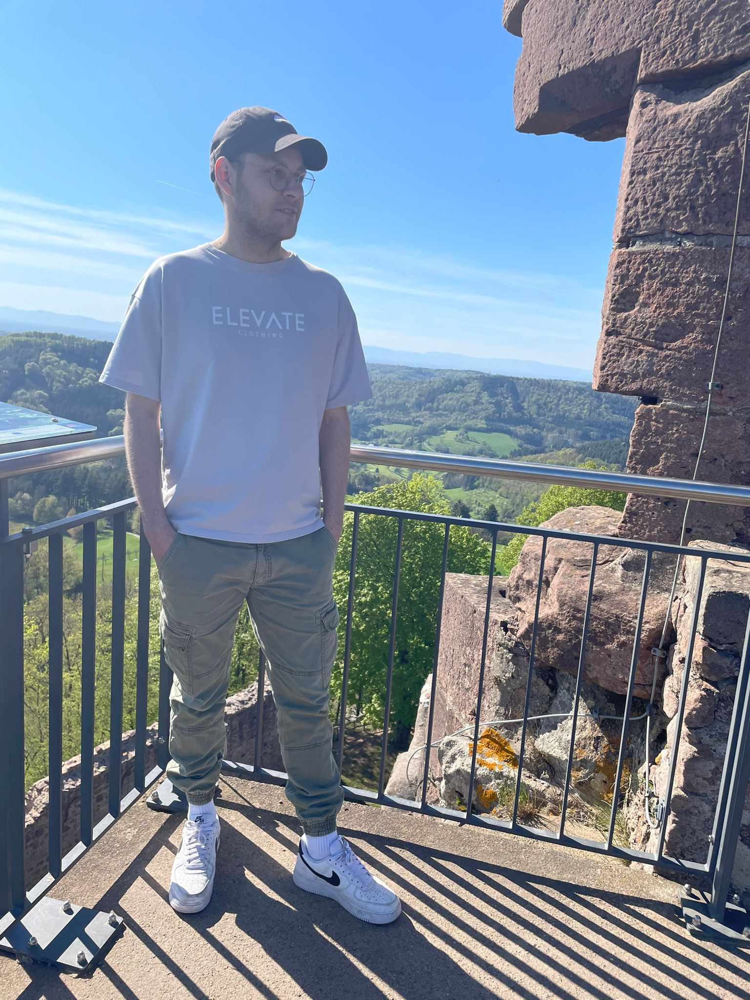

about me

Ich freue mich, dass Sie sich für meine Arbeit interessieren.
Nun aber mehr zu meiner Person:
Name: Robert Schindler
Geburtstag: 14.09.1999
Weitere Info`s: Ich bin im Schwarzwald geboren und aufgewachsen. Aktuell Studiere ich auch hier an der Hochschule Furtwangen Medienkonzeption im 1. Semester.